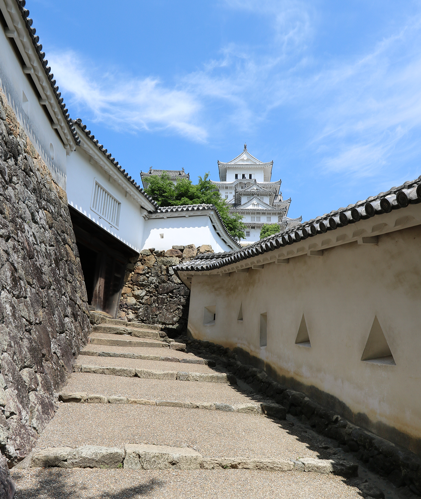
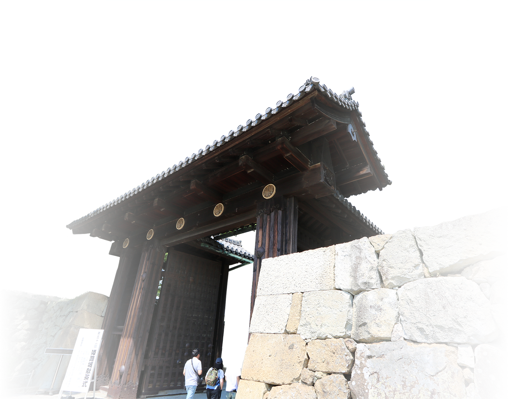
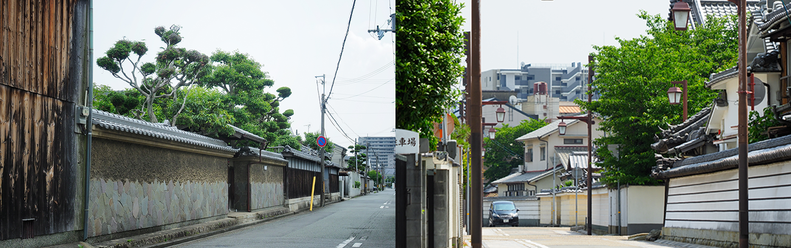

HIMEJI CASTLE
姫路城
姫路が播磨の中心となり、豪族赤松氏が「姫路城」の前身となる砦を姫山に築いたのは室町時代のこと。 その後、豊臣秀吉が天守閣を持つ城郭を創り、次いで姫路に入った池田輝政が現在の名城「姫路城」を完成させました。
「姫路城」は1931年（昭和6年）に国宝に、1951年（昭和26年）に新国宝（文化財保護法上の国宝）に指定。 さらに1993年（平成5年）12月には奈良の法隆寺とともに日本で初の世界文化遺産となりました。
現在指定されている世界遺産にはエジプトのピラミッド、フランスのヴェルサイユ宮殿、中国の万里の長城等がありますが、
いずれも芸術的価値のあるものや時代を象徴するものばかり。
「姫路城」はその美的完成度の高さや日本独自の城郭の構造から17世紀初頭の日本の城郭建築を代表する史跡建造物として評価されたのです。
姫路城
黒田官兵衛がキリスト教徒に改宗し、姫路で活躍したのは4年余りに過ぎないと言われていますが、
官兵衛が姫路を去った後もその影響力は大きく、
禁教政策が敷かれていた間にもこの地には多くの隠れキリシタンが存在したと言われています。
また、現在も「姫路城」のすぐ東側に「賢明女子学院中学校・高等学校」「淳心学院中学校・高等学校」という
2つのミッションスクールや「カトリック姫路教会」が集まっています。
TRADITIONAL CITYSCAPE
本件は「姫路城」の東側、西国街道（山陽道）と但馬街道（播但道）の交差点に立地。 江戸初期から交通の要衝として発展した場所で、南には旧西国街道である城南線が通り、 東には旧外京口門（現在の「京口」駅付近）が位置しています。
山陽道（西国街道）は、「京都」と「太宰府」という古代から栄えていたこの二つの地域を結んでおり、 その歴史は古く645年（大化元年）に中大兄皇子らにより制定された五畿七道の中でも、山陽道は日本唯一の大路として格付けられるほどでした。
一方の播但連絡道（但馬街道）は古代から山陽と山陰を結び、「姫路城」の城下から日本海沿岸の城崎まで、 兵庫県を南北に縦断する幹線道路の一つとして発展。現在、国道312号と播但連絡道が走るこの道は「生野街道」とも称され、 昔も今も人や物が行き交う程よい活気に満ちています。
格式ある古き佳き街並みが魅力の「五軒邸」。
「姫路城」の東側の、「久長門」と「内京口門」の間の中濠沿いのエリアは、
かつて久長という名家があったことから「久長町」と呼ばれていましたが、それが現在の「五軒邸」の1〜4丁目となりました。
中濠沿いの「内京口門」「長久門」に近く、立派な武家屋敷が並び建つ界隈で永い歴史を感じさせる風情が漂い、
お寺が集まった旧寺町や戸建て中心の街並みが、落ち着いた雰囲気を醸し出しています。
現地周辺の街並
本件からは細い道路を隔てた北側に位置し、
その風情ある街区との一体感がここに住まう心地よさや誇らしさをより一層高めてくれます。
また、「姫路城」との調和を目指した景観形成が求められる「姫路城周辺風景形成区域」内に位置しているため、
様々な基準によって美しい街並みが守られ、歴史・文化・自然との共生が図られています。
「シエリア姫路城 東」のアドレスとなる「大黒壱丁町（だいこくいっちょうまち）」は、
1948年（昭和23年）度から始まった復興土地区画整理事業によって新しく生まれた街。
「姫路城」南東の外曲輪内にあり、
旧街区としての良好な環境を継承する「城巽地区」の一角として憧憬を集めるエリアで、
一帯にはお城に所縁のある武家屋敷や町屋が軒を並べていたそうです。
隣接する「五軒邸」をはじめ、
「大黒町」「国府寺町」「下寺町」「坂田町」「東魚町」「本町」それぞれの一部と
「壱丁町」が1981年（昭和56年）に新しく「大黒壱丁町」として設定されました。
町名は、この地にかつて「大黒屋」という、
総社に大国主命（おおくにぬしのみこと＝大黒様）を祀った料理茶屋が
あったことに由来すると言われています。
町内をには西日本の東西の交通の要となった幹線道路「旧山陽道」が通っています。